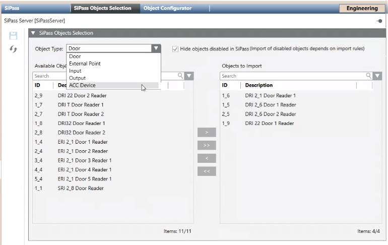

Excluding SiPass Objects from the Project [V5.1]
By default, all the objects of the connected SiPass system (controllers, doors, external points, inputs/outputs, and so on) are imported into the Desigo CC project. If you only need to manage a subset of the SiPass objects from Desigo CC, you can exclude the unwanted ones from the import.
NOTE: Non-imported doors and other elements are neither monitored nor supervised. This means they will not generate events or status information in Desigo CC, and cannot be commanded. They are also not included in the license count.
- Desigo CC is configured to integrate a SiPass access control system and connected to the SiPass server (Connection State =
Connected). - System Manager is in Engineering mode.
- In System Browser, select Management View.
- Select Projects > Field Networks > [SiPass network] > [SiPass server].
- Select the SiPass Objects Selection tab.
- Click Refresh SiPass Server Snapshot
 to populate or refresh the interface.
to populate or refresh the interface. - From the Object Type drop-down list, select the type of SiPass object you want to work with: ACC Device, Door, Input, Output, or External Point.
- The Objects to import list on the right shows the SiPass objects of that type included in the Desigo CC configuration. Any excluded objects are shown in the Available objects list on the left.
- If you also want to show objects (for example, digital inputs) that are disabled in SiPass, clear the Hide objects disabled in SiPass check box. For more information see Alignment of Sipass Object Selection, below.
- (Optional) For large lists, to help you find a particular object or group of objects:
a. in the Search field type a few characters of the name with wildcards (* for any string, or ? for exactly one character).
b. Click Search or press ENTER.
or press ENTER. - Only the objects that match the search criteria are shown. Underneath each list, Items indicates
number of objects shown/total number of objects of the selected type.
NOTE: Click x to clear the search. To repeat a previous search, select it from the drop-down list. - Move the objects you want to exclude to the left, and those you want to re-include to the right. The following controls are available:
- Double-click an object to move it to the opposite list.
- Select one or more objects and use
 or
or  to move them to the opposite list.
to move them to the opposite list. - Use
 or
or  to move all the objects currently displayed to the opposite list.
to move all the objects currently displayed to the opposite list. - If you exclude an object of type ACC Device, all the objects under that controller (doors, inputs, outputs, and so on) are also automatically excluded from the import. The excluded child objects are also removed from the lists, because you can no longer individually include/exclude them.
- Repeat steps 5 to 8 above for any other object types.
- Click Save
 .
. - The Status Discovery property changes to
Discovery Required. - To make the changes effective, in the Operation tab, click Discover.
- When discovery finishes, any excluded items are removed from System Browser, and any re-included ones are added to System Browser.

SiPass flag objects are not managed by the SiPass Objects Selection tab, and so cannot be individually excluded from the import in this way. Also, if you exclude an ACC Device, any flag objects under it will not be excluded.

Alignment of SiPass Object Selection
The SiPass Objects Selection expander is empty on project startup. It is populated upon execution of Discovery, or a Refresh SiPass Server Snapshot command.
- Initially, all the SiPass objects are selected to be imported, and so placed on the right.
- You can select which objects to import/remove for the next discovery by moving them to the appropriate list.
- Any objects disabled in SiPass, if not hidden, are shown dimmed. You can move these objects between lists to include/exclude them. However, because the SiPass import skips disabled objects by default, to be able to import them you must customize the SiPass import rules to set Skip if Disabled to
False. - Any objects that were deleted in SiPass after the last discovery are shown in red. These objects cannot be selected, moved or operated on: they will disappear from the lists after the next discovery.